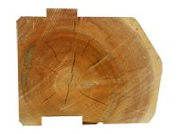
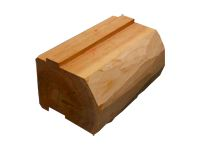
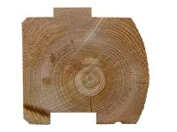
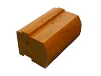
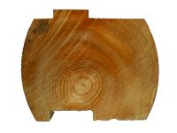
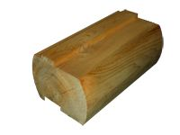

Log Types, Styles, and Sizes
We offers a range of log types, styles and sizes.
Log Types
Our Log home packages are available in either Northern White Cedar or Eastern White Pine.
We recommend Northern White Cedar logs for their distinct advantages, but the choice is yours.
Northern White Cedar...
• has a superior insulation (R-Value).
• has superior weather resilience.
• is naturally resistant to rot, mildew, and insects.
• has a natural low moisture content.
• has a lighter construction weight for easy building.
• is a very stable & strong wood species.
The Northern White Cedar we use...
• is naturally seasoned for 1Yr. (Not Force-Dried!)
• is not chemically treated or processed.
• is harvested responsibly and locally by independent loggers.
Eastern White Pine...
• is faster growing and more available.
• must be kiln-dried for log home use.
• is comparable to cedar in stability.
The Eastern White Pine we use...
• offers a marginal price savings.
• is not chemically treated.
• is kiln-dried to remove enough moisture for log home use.
Log Styles
Drawshaved D-Profile
Flat Inside / Drawshaved Outside

Hand Drawshaved logs offer a unique and "authentic" look and is our most popular style.
A drawshave is used to to remove the outer bark of the log by hand, not by milling or machining. This results in a log home with unparalleled rustic character. The hand drawshaved style is available with our 8" or 7" Native White Cedar D-Profile logs.
Milled D-Profile
Flat Inside / Round Outside

Milled D-Profile logs offer a more contemporary and uniform look. All surfaces of the log are milled to perfection. This style is offered in 8" and 7" Northern White Cedar and Eastern White Pine logs.
Milled R/R-Profile
Round Inside / Round Outside

Milled Round/Round-Profile logs have a round contour on both the inside and outside face of the log. The look is unique by creating a dramatic interior surface. This style is only available in a 7" Norther White Cedar log.
Log Sizes
The list below outlines the log sizes available in each particular type and style.
Northern White Cedar• 8" x 6" - Drawshaved D-Profile, Milled D-Profile
• 7" x 5" - Drawshaved D-Profile, Milled D-Profile, Milled R/R-Profile
Eastern White Pine• 8" x 8" - Milled D-Profile
• 8" x 6" - Milled D-Profile